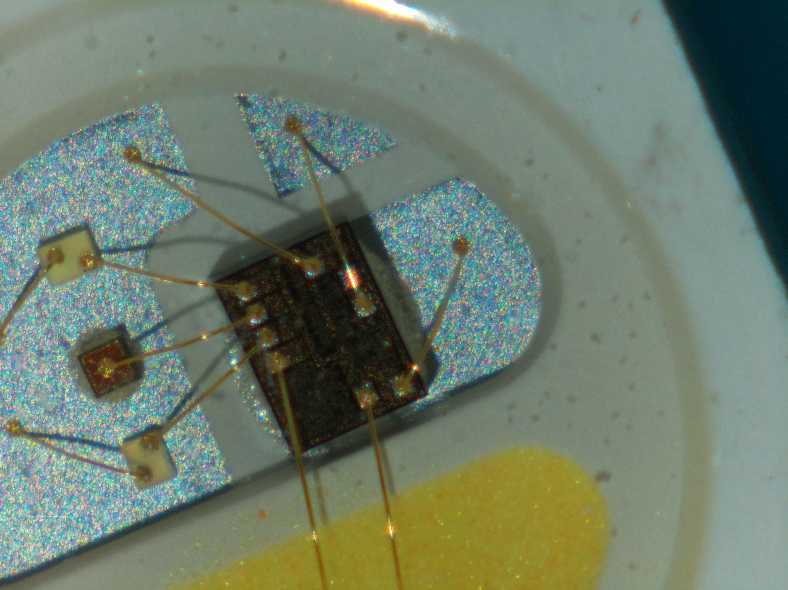

This contains the ramblings, sporadic notes, and thoughts as I work on the Elytra scanning microscope.
This project was largely inspired by the designs as used in Ladybug, Ladybug BEEFY, and other microscope photography projects, such as those by @timonsku@mastodon.social.
While it would be easy for me to use Python for this project, and to use Flask & its associated templating engines for getting remote control, the OpenCV Python bindings for super-resolution don't seem to exist in Python at time of writing. However, Rust's bindgen ones, do.
As such, I've been tinkering with those bindings, and looking at how the opencv::superres::{*} contents work.
This project will make heavy use of amateur skill FFF/FDM printing, due to both having a machine, and making it trivially reproducible for other tinkerers who may find this project useful.